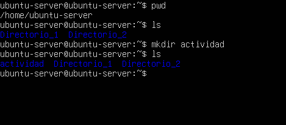
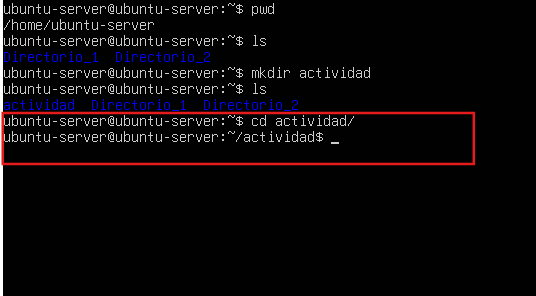
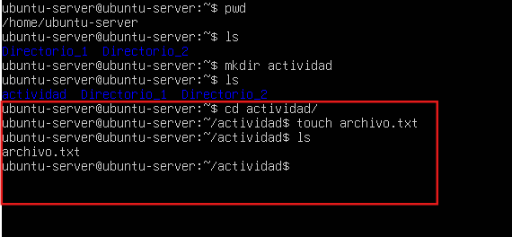
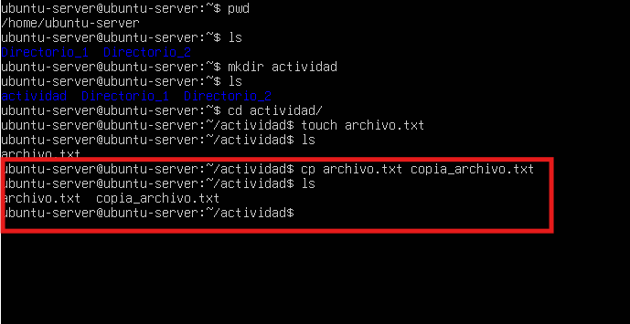
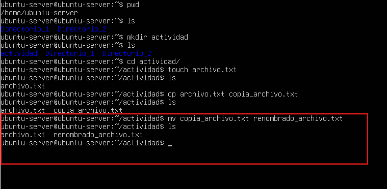
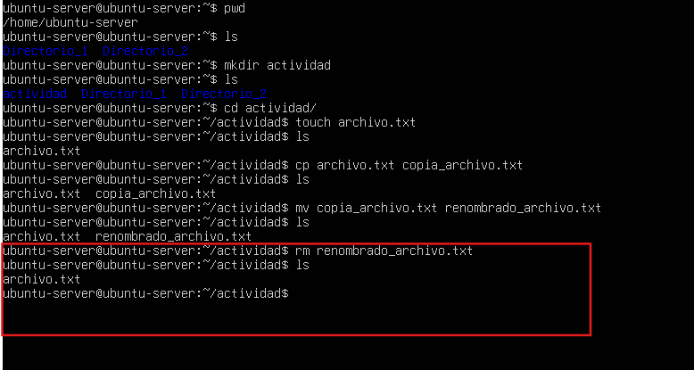
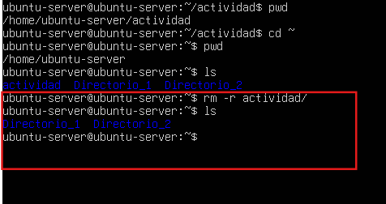

Gestion de archivos y directorios en la terminal de Ubuntu
Crear un directorio
Usamos el comando pwd para saber en donde nos encontramos. Ya sabiendo que estamos en el subdirectorio de home (en este caso nuestro usuario “ubuntu-server”) usamos el comando ls, para listar o ver los directorios dentro de Ubuntu-server.
Ahora usamos el comando mkdir actividad para crear un directorio nuevo con el nombre “actividad”, volvemos a ejecutar ls, y vemos que se a agregado un nuevo directorio llamado “actividad”:
Movernos al directorio creado
Usamos el comando cd para ir al directorio recien creado, en este caso “actividad”:
Crear un archivo vacio
Usamos el comando touch archivo.txt para crear un archivo vacio, (como no salimos del directorio actividad, se crea dentro de este). Usamos el comando ls para ver los que contiene el directori actividad y vemos que esta el archivo que creamos anteriormente (archivo.txt):
Copiar un archivo
Usamos el comando cp archivo.txt copia_archivo.txt para hacer una copia del archivo “archivo.txt” con el nombre de “copia_archivo.txt”. luego usamos el comando ls para listar y ver que tenemos un nuevo archivo (copia_archivo.txt), el cual es la copia que hicimos anteriormente:
cambiar nombre de archivo
Usamos el comando mv copia_archivo.txt renombrado_archivo.txt para cambiar de nombre el archivo “copia_archivo.txt” a “renombrado_archivo.txt”. usamos el comando ls para comprobar que se haya cambiado el nombre del archivo:
eliminar archivo
Usamos el comando rm renombrado_archivo.txt para eliminar el archivo “renombrado_archivo.txt”. usamos el comando ls para ver si se eliminó, y en efecto ya no lo aparece:
Eliminar directorios
(usamos el comando clear para limpiar la pantalla o borrar las líneas de comando).
Usamos el comando pwd para ver en que directorio nos encontramos. Estamos en el directorio “actividad”, luego usamos el comando cd ~ para regresar al directorio “home”, volvemos a usar pwd para comprobar que estamos en “home”. Procedemos a listar home con ls, vemos 3 directorios, entre esos “actividad” el cual procederemos a eliminar usando el comando rm -r actividad. Volvemos a listar con el comando ls y comprobamos que solo quedan 2 directorios:
